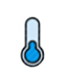

<div class="container">
	<mat-card class="cardContainer">
		<mat-grid-list cols=5 rowHeight="20px">
			<mat-grid-tile colspan=2 rowspan=3>
				<button mat-raised-button (click)="changeViewType('day')" 
								[color]="periodType=='Day'?'primary':'basic'">
					Day
				</button>
				<button mat-raised-button (click)="changeViewType('week')"
								[color]="periodType=='Week'?'primary':'basic'">
					Week
				</button>
				<button mat-raised-button (click)="changeViewType('month')"
								[color]="periodType=='Month'?'primary':'basic'">
					Month
				</button>
			</mat-grid-tile>
			<mat-grid-tile colspan=2 rowspan=4>
				<mat-form-field appearance="fill">
					<mat-label>Enter Period for View</mat-label>
					<mat-date-range-input [formGroup]="range" [rangePicker]="picker">
						<input matStartDate formControlName="start" placeholder="Start date">
						<input matEndDate formControlName="end" placeholder="End date"  (dateInput)="addNewDate()">
					</mat-date-range-input>
					<mat-datepicker-toggle matSuffix [for]="picker"></mat-datepicker-toggle>
					<mat-date-range-picker #picker></mat-date-range-picker>

					<mat-error *ngIf="range.controls.start.hasError('matStartDateInvalid')">Invalid start date</mat-error>
					<mat-error *ngIf="range.controls.end.hasError('matEndDateInvalid')">Invalid end date</mat-error>
				</mat-form-field>
			</mat-grid-tile>
		</mat-grid-list>

		<mat-grid-list cols="3" rowHeight="390px" gutterSize="10px">
			<mat-grid-tile>
				<mat-card (click)="zoomChart('temperature')">
					<div *ngIf="!tempLoading;then tempProgress else tempChart"></div>
					<ng-template #tempProgress>
						<mat-progress-spinner
							class="example-margin"
							color="primary"
							mode="indeterminate"
							value="50">
						</mat-progress-spinner>
					</ng-template>

					<ng-template #tempChart>
						<fusioncharts
							[type]="type"
							[dataFormat]="dataFormat"
							[dataSource]="tempDataSource"
						>
						</fusioncharts>
					</ng-template>
				</mat-card>
			</mat-grid-tile>
			<mat-grid-tile>
				<mat-card (click)="zoomChart('humidity')">
					<div *ngIf="!humiLoading;then humiProgress else humiChart"></div>
					<ng-template #humiProgress>
						<mat-progress-spinner
							class="example-margin"
							color="primary"
							mode="indeterminate"
							value="50">
						</mat-progress-spinner>
					</ng-template>

					<ng-template #humiChart>
						<fusioncharts
							[type]="type"
							[dataFormat]="dataFormat"
							[dataSource]="humiDataSource"
						>
						</fusioncharts>
					</ng-template>
				</mat-card>
			</mat-grid-tile>
			<mat-grid-tile>
				<mat-card (click)="zoomChart('light')">
					<div *ngIf="!luxLoading;then luxProgress else luxChart"></div>
					<ng-template #luxProgress>
						<mat-progress-spinner
							class="example-margin"
							color="primary"
							mode="indeterminate"
							value="50">
						</mat-progress-spinner>
					</ng-template>

					<ng-template #luxChart>
						<fusioncharts
							[type]="type"
							[dataFormat]="dataFormat"
							[dataSource]="luxDataSource"
						>
						</fusioncharts>
					</ng-template>
				</mat-card>
			</mat-grid-tile>
		</mat-grid-list>

		<mat-grid-list cols=5 rowHeight="24px">
			<mat-grid-tile colspan=5 rowspan=26>
				<mat-card style="width: 1000px;">
					<picture>
							<source media='(min-width:0px)' srcset="../../../assets/img/sensor.png">
							
					</picture>
					<mat-card-content>
						
					</mat-card-content>
				</mat-card>
			</mat-grid-tile>
		</mat-grid-list>
	</mat-card>
</div>